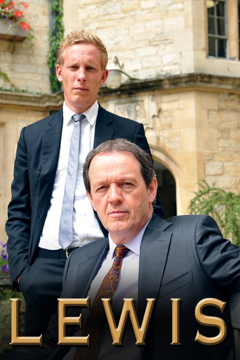

Inspector Lewis (Aired 2007-)
Rating: 8/10
Age Restriction: TV-12
Inspector Robert Lewis and Sergeant James Hathaway solve the tough cases that the learned inhabitants of Oxford throw at them.
Creator: Colin Dexter
Cast
Kevin Whately as .... DI Robert Lewis
Laurence Fox as .... DS James Hathaway
Clare Holman as .... Dr. Laura Hobson
Rebecca Front as .... Chief Superintendent Jean Innocent
Angela Griffin as .... DS Lizzie Maddox
Steve Toussaint as .... Ch. Supt. Joe Moody
Nicholas Jones as .... Philip Hathaway